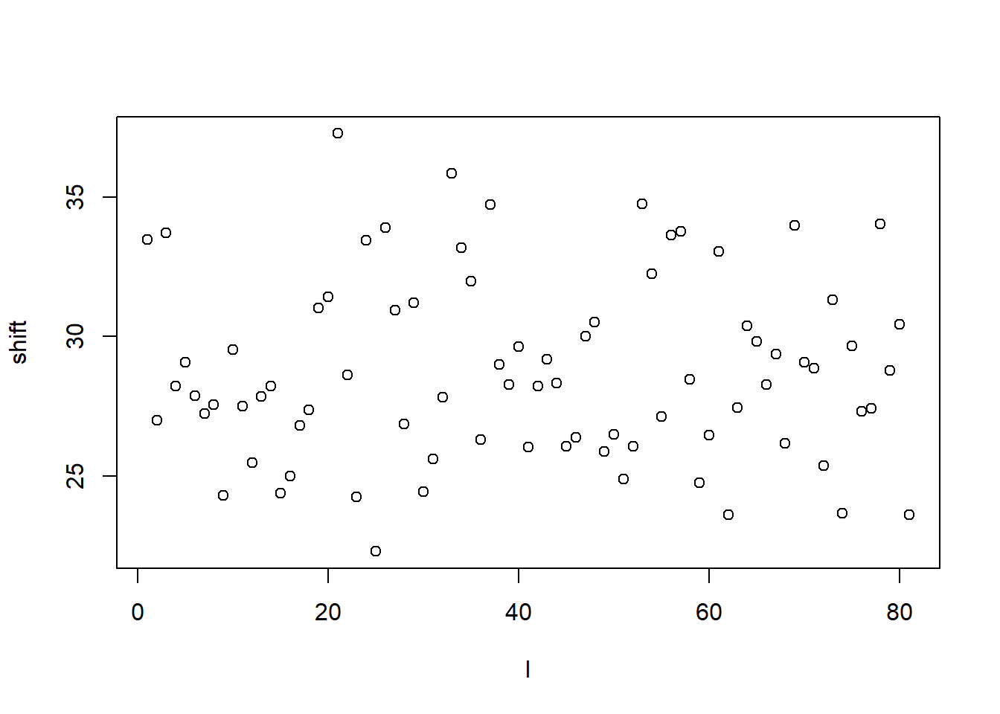
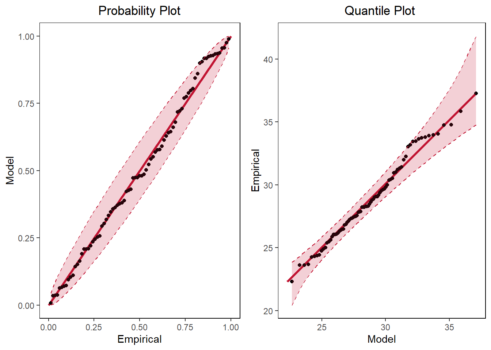
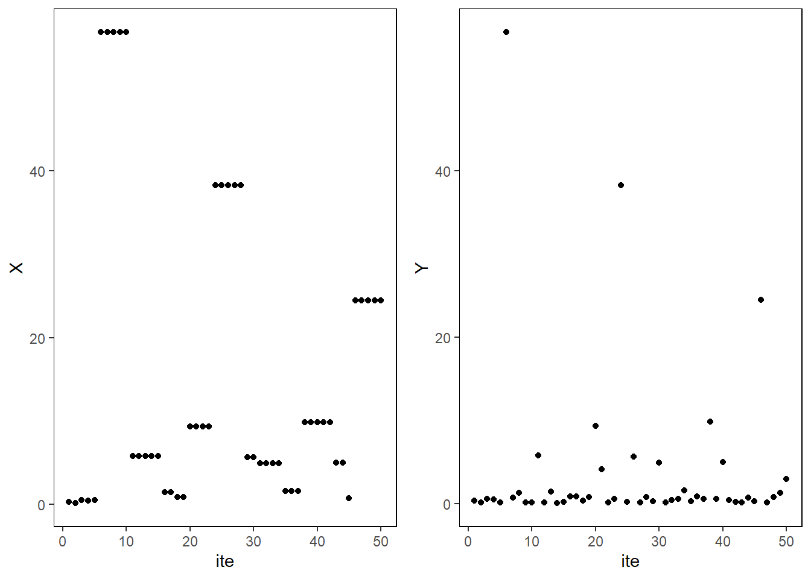
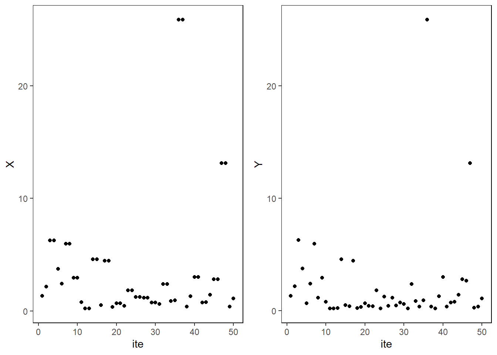
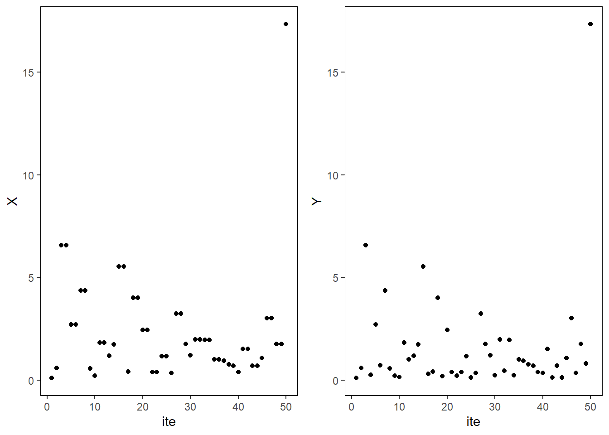
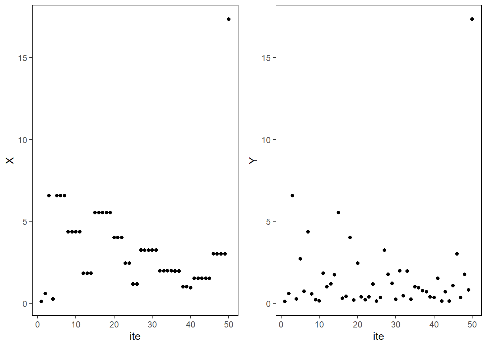

Explore extremes
Block maxima
Suppose we generate from normal distribution. And we have block maxima from every \(100\) observations.
df <- data.frame(x=1:10000, y=rnorm(10000,0,1))
df$block_max <- rep(FALSE,10000)
for (i in 1:100) {
df$block_max[df$y==(max(df$y[(100*(i-1)+1):(100*i)]))] <- TRUE
}
ggplot(df) + geom_point(aes(x=x,y=y,colour=factor(block_max)))
Suppose we plot only the block maxima.
ggplot(df %>% filter(block_max==TRUE)) + geom_point(aes(x=x,y=y))
Model with GEV.
ggplot(df %>% filter(block_max==TRUE),aes(y)) + geom_density()
ggplot(df,aes(y) ) + geom_density()
Return level plots
Exercise recreating Fig. 3.1 from Coles’ book. Possible typo in the book as the \(x\)-axis should be \(- \log(-\log(U))\) and not \(\log(-\log(U))\).
# set parameters
mu <- rep(0,3)
sigma <- rep(1,3)
xi <- c(-0.2,0,0.2)
U <- runif(10000) %>% sort()
z_p_neg <- c()
z_p_pos <- c()
z_p_0 <- c()
# calculate z_p for different values of xi
for (i in 1:length(U)) {
z_p_neg[i] <- -(1- (-log(U[i]))^(-xi[1]) )*(sigma[1]/xi[1])+ mu[1]
z_p_pos[i] <- -(1- (-log(U[i]))^(-xi[3]) )*(sigma[3]/xi[3])+ mu[3]
z_p_0[i] <- -log(-log(U[i]))*sigma[2]+mu[2]
}
z_p <- data.frame(U,z_p_neg,z_p_0,z_p_pos)
z_p %>% ggplot() + geom_line(aes(x=-log(-log(U)),y=(z_p_neg)),color="#009ada",linewidth=1.5) + geom_line(aes(x=-log(-log(U)),y=(z_p_0)),linewidth=1.5) + geom_line(aes(x=-log(-log(U)),y=(z_p_pos)),color="#c11432",linewidth=1.5) +
xlab(TeX("$-\\log(y_p)$")) +
ylab(TeX("$z_p$" )) + theme_minimal() +
annotate("text", x = 8, y = 0, label = TeX("$\\xi=-.2$")) +
annotate("text", x = 8, y = 10, label = TeX("$\\xi=0$")) +
annotate("text", x = 8, y = 25, label = TeX("$\\xi=.2$")) +
theme_bw() +
theme(panel.spacing = unit(2, "lines"),
panel.grid.major = element_blank(),
panel.grid.minor = element_blank(),
strip.background = element_blank(),
panel.border = element_rect(colour = "black", fill = NA))Warning in is.na(x): is.na() applied to non-(list or vector) of type
'expression'
Warning in is.na(x): is.na() applied to non-(list or vector) of type
'expression'
Warning in is.na(x): is.na() applied to non-(list or vector) of type
'expression'
Maximum likelihood fitting of the GEV distribution
data(venice)Try some functions from the ismev package.
gev.fit(venice[,2])$conv
[1] 0
$nllh
[1] 201.6732
$mle
[1] 103.7734080 12.3260517 -0.2326299
$se
[1] 1.89770997 1.31099392 0.08489683Try random exponential as it is known to have \(\xi=0\).
df <- data.frame(x=1:10000, y=rnorm(10000,0,1))
df$block_max <- rep(FALSE,10000)
for (i in 1:100) {
df$block_max[df$y==(max(df$y[(100*(i-1)+1):(100*i)]))] <- TRUE
}
ggplot(df) + geom_point(aes(x=x,y=y,colour=factor(block_max)))
fit <- gev.fit(df$y[df$block_max==TRUE])$conv
[1] 0
$nllh
[1] 43.06466
$mle
[1] 2.3705912 0.3411276 -0.1311015
$se
[1] 0.03834513 0.02711313 0.07363092fit$mle[1] 2.3705912 0.3411276 -0.1311015#gamGPDfit(x=df,datvar='y',threshold = 2.5,xiFrhs = xiFrhs)Compare the fit with the density.
g <- function(x) {
1/fit$mle[2] * (1 + fit$mle[3]*((x - fit$mle[1])/fit$mle[2] ) )^(-(1+1/fit$mle[3]))* exp(-(1 + fit$mle[3]*((x - fit$mle[1])/fit$mle[2] ) )^(-1/fit$mle[3]) )
}
x_fit <- seq(1,4,0.01)
y_fit <- c()
for (i in 1:length(x_fit)) {
y_fit[i] <- g(x_fit[i])
}
#plot(x_fit,y_fit)
df_fit <- data.frame(x_fit,y_fit)ggplot() + geom_density(df %>% filter(block_max==TRUE),mapping=aes(y)) + geom_line(df_fit,mapping = aes(x_fit,y_fit),color='#c11432') + theme_minimal()
Try same fit with Venice data.
venice <- data.frame(x=1:length(venice[,2]),y=venice[,2])
fit <- gev.fit(df$y[df$block_max==TRUE])$conv
[1] 0
$nllh
[1] 43.06466
$mle
[1] 2.3705912 0.3411276 -0.1311015
$se
[1] 0.03834513 0.02711313 0.07363092fit$mle[1] 2.3705912 0.3411276 -0.1311015x_fit <- seq(70,200,1)
y_fit <- c()
g <- function(x) {
1/fit$mle[2] * (1 + fit$mle[3]*((x - fit$mle[1])/fit$mle[2] ) )^(-(1+1/fit$mle[3]))* exp(-(1 + fit$mle[3]*((x - fit$mle[1])/fit$mle[2] ) )^(-1/fit$mle[3]) )
}
for (i in 1:length(x_fit)) {
y_fit[i] <- g(x_fit[i])
}
df_fit <- data.frame(x_fit,y_fit)
ggplot() + geom_density(venice,mapping=aes(y)) + geom_line(df_fit,mapping = aes(x_fit,y_fit),color='#c11432') + theme_minimal()Warning: Removed 131 rows containing missing values (`geom_line()`).
N <- 1000
norm <- rnorm(N)
ex <- rexp(N)
plot(norm,ex)
hist(norm)
hist(ex)
u_1 <- pnorm(norm)
u_2 <- pexp(ex)
u_1 %>% head()[1] 0.95417171 0.64117952 0.60047201 0.59610084 0.03033649 0.78790084plot(u_1,u_2)
n_1 <- qnorm(u_1)
n_2 <- qnorm(u_2)
plot(n_1,n_2)
par_1 <- 1/(1-u_1)
par_2 <- 1/(1-u_2)
plot(par_1,par_2)
Plot Gumbel distribution using PIT
mu <- 1
sig <- 1
U <- runif(1000)
z <- mu - sig*log(-log(U))
df <- data.frame(z,U)
ggplot(df) + geom_point(aes(x=z,y=U))
Try Port Pirie sea-levels diagnostic plots
Port Pirie data not available in the package, maybe try with Venice sea-levels data?
data(portpirie)
venice[,2] [1] 99 78 113 113 107 106 107 97 86 101 98 91 88 95 102 104 108 126 102
[20] 96 117 104 102 100 96 91 107 114 117 126 108 110 116 104 108 127 118 132
[39] 120 122 116 118 111 95 110 122 102 114 140 114 136x=gev.fit(portpirie)$conv
[1] 0
$nllh
[1] -4.339058
$mle
[1] 3.87474692 0.19804120 -0.05008773
$se
[1] 0.02793211 0.02024610 0.09825633gev.diag(x)
Try to recreate the likelihood function.
The function gets longer as initial values of the parameters are either pre-specified or calculated from the data. Therefore, gev_fit.R script contains the function.
x <- portpirie
gev.diag(gev_fit(x))Warning in log(sig): NaNs producedWarning in log(1 + xi * ((x - mu)/sig)): NaNs produced
Warning in log(1 + xi * ((x - mu)/sig)): NaNs produced# the function could return very high values
# that cannot be minimum negative likelihood like 10^6
# would include in further developmentSuccess! The plotting function works with the likelihood function and produces desired output.
GEV plot functions
Now, try to replicate the four plots given above, starting with the probability plot. The model probability is a straight line, but empirical data will deviate from this line.
# calculate GEV inverse CDF
GEV_inv <- function(U,mle) {
mu <- mle[1]
sig <- mle[2]
xi <- mle[3]
z <- (sig/xi) * ( (-log(U))^(-xi) -1) + mu
return(z)
}
# calculate GEV CDF
GEV <- function(z,mle) {
mu <- mle[1]
sig <- mle[2]
xi <- mle[3]
G <- c()
for (i in 1:length(z))
G[i] <- exp( -(1 + xi*((z[i]-mu)/sig) )^(-1/xi) )
return(G)
}Next is Q-Q plot.Q-Q plot compares two probability distributions by plotting their quantiles. In this example, it plots two GEV distributions with different parameters: empirical calculated though a formula used for the initial parameters in the optimisation and the model parameters (MLE).
GEV_QQ <- function(x) {
# empirical distribution estimates
sig_init <- sqrt(6 * var(x))/pi
mu_init <- mean(x) - 0.57722 * sig_init
xi_init <- 0.1
est_par <- c(mu_init,sig_init,xi_init)
# model (MLE) estimates
model_par <- gev_fit(x)$mle
# generate z using PIT for each case
q <- seq(from=1/(length(x)+1),to=length(x)/(length(x)+1),length.out=length(x)) #quantile
model <- GEV_inv(U=q,mle=model_par) #z generated from the model
est <- GEV_inv(U=q,mle=est_par) #z generated from GEV empirical estimates
dat <- x %>% sort()
return(data.frame(q=q,Model=model,Empirical=est,Data=dat))
}The plot shows that empirical estimates are good since it is almost linear but shape parameter is a bit off, hence the slight curve.
Plot for UKCP data
Yearly maximum temperature data from the UKCP model.
# calculate yearly maxima over 81 years
uk_winter <- readRDS("data/uk_1999_2079_winter.RDS")
uk_spring <- readRDS("data/uk_1999_2079_spring.RDS")
uk_summer <- readRDS("data/uk_1999_2079_summer.RDS")
uk_autumn <- readRDS("data/uk_1999_2079_autumn.RDS")# combine to 1 and take only London
tmp <- c()
for (i in 1:81) {
tmp[((i-1)*360+1):(i*360)] <- c((uk_winter[uk_winter$is_location=="london",((90*(i-1))+7):((90*i)+6)] %>% as_vector),
(uk_spring[uk_spring$is_location=="london",((90*(i-1))+7):((90*i)+6)] %>% as_vector),
(uk_summer[uk_summer$is_location=="london",((90*(i-1))+7):((90*i)+6)] %>% as_vector),
(uk_autumn[uk_autumn$is_location=="london",((90*(i-1))+7):((90*i)+6)] %>% as_vector))
}
for (i in 1:81) {
tmp[((i-1)*360+1):(i*360)] <- c((uk_winter[uk_winter$is_location=="birmingham",((90*(i-1))+7):((90*i)+6)] %>% as_vector),
(uk_spring[uk_spring$is_location=="birmingham",((90*(i-1))+7):((90*i)+6)] %>% as_vector),
(uk_summer[uk_summer$is_location=="birmingham",((90*(i-1))+7):((90*i)+6)] %>% as_vector),
(uk_autumn[uk_autumn$is_location=="birmingham",((90*(i-1))+7):((90*i)+6)] %>% as_vector))
}
# calculate yearly maxima
x <- c()
for (i in 1:81) {
x[i] <- max(tmp[(360*(i-1)+1):(i*360)])
}
I <- 1:length(x)
gradient <- summary(lm(x~I))$coefficients[2,1]
shift <- c()
for (i in 1:length(x)) {
shift[i] <- x[i] - (i-1)*gradient
}
plot(I,x)
plot(I,shift)
# try shifting all the data with the corresponding yearly coefficients
# calculate yearly maxima
y <- tmp
I <- 1:length(y)
gradient <- summary(lm(y~I))$coefficients[2,1]
shift_tmp <- c()
for (i in 1:length(y)) {
shift_tmp[i] <- y[i] - (i-1)*gradient
}
plot(I,y)
plot(I,shift_tmp)
x <- shift
mle <- gev_fit(x)$mleWarning in log(1 + xi * ((x - mu)/sig)): NaNs produced
Warning in log(1 + xi * ((x - mu)/sig)): NaNs produced
Warning in log(1 + xi * ((x - mu)/sig)): NaNs produced
Warning in log(1 + xi * ((x - mu)/sig)): NaNs produced
Warning in log(1 + xi * ((x - mu)/sig)): NaNs produced
Warning in log(1 + xi * ((x - mu)/sig)): NaNs produced
Warning in log(1 + xi * ((x - mu)/sig)): NaNs produced
Warning in log(1 + xi * ((x - mu)/sig)): NaNs produced
Warning in log(1 + xi * ((x - mu)/sig)): NaNs produced
Warning in log(1 + xi * ((x - mu)/sig)): NaNs producedtemp <- data.frame(Temperature=sort(x))
# calculate upper and lower bounds for 95% CI to add to the plots
Ulow<-sapply(1:length(x), function(i){qbeta(0.025, i, length(x)+1-i)})
Uup<-sapply(1:length(x), function(i){qbeta(0.975, i, length(x)+1-i)})
Model <- temp %>% select(Temperature) %>% mutate(Model=GEV(z=Temperature,mle=mle)) %>%
mutate(Ulow=Ulow) %>% mutate(Uup=Uup)
Empirical <- temp %>% select(Temperature) %>% arrange(Temperature) %>% mutate(Empirical=row_number()/(nrow(temp)+1))
df <- temp %>% left_join(Empirical,by="Temperature") %>% left_join(Model,by="Temperature")
df %>% head() Temperature Empirical Model Ulow Uup
1 22.30078 0.01219512 0.007683862 0.0003125167 0.04452026
2 23.60745 0.02439024 0.035245958 0.0030043515 0.06687562
3 23.62295 0.03658537 0.035787263 0.0077040373 0.08636287
4 23.66938 0.04878049 0.037444590 0.0136170871 0.10444371
5 24.24000 0.06097561 0.062620822 0.0203448393 0.12163814
6 24.30527 0.07317073 0.066101775 0.0276683605 0.13820261p1 <- df %>% ggplot() + geom_segment(aes(x = 0, y = 0, xend = 1, yend = 1), color = "#C11432",size=1.2)+ geom_point(aes(x=Empirical,y=Model)) + geom_line(aes(x=Empirical,y=Uup),linetype="dashed", color="#C11432") + geom_line(aes(x=Empirical,y=Ulow), linetype="dashed", color="#C11432") +
geom_ribbon(aes(x=Empirical,ymin=Uup,ymax=Ulow), fill="#C11432", alpha=0.2)+
ggtitle("Probability Plot") + xlab("Empirical") + ylab("Model")Warning: Using `size` aesthetic for lines was deprecated in ggplot2 3.4.0.
ℹ Please use `linewidth` instead.df <- GEV_QQ(sort(x))%>% mutate(GEV_Ulow=qgev(p=Ulow,loc=mle[1],scale=mle[2],shape=mle[3])) %>% mutate(Ulow=Ulow) %>% mutate(Uup=Uup)%>% mutate(GEV_Uup=qgev(p=Uup,loc=mle[1],scale=mle[2],shape=mle[3]))Warning in log(1 + xi * ((x - mu)/sig)): NaNs produced
Warning in log(1 + xi * ((x - mu)/sig)): NaNs produced
Warning in log(1 + xi * ((x - mu)/sig)): NaNs produced
Warning in log(1 + xi * ((x - mu)/sig)): NaNs produced
Warning in log(1 + xi * ((x - mu)/sig)): NaNs produced
Warning in log(1 + xi * ((x - mu)/sig)): NaNs produced
Warning in log(1 + xi * ((x - mu)/sig)): NaNs produced
Warning in log(1 + xi * ((x - mu)/sig)): NaNs produced
Warning in log(1 + xi * ((x - mu)/sig)): NaNs produced
Warning in log(1 + xi * ((x - mu)/sig)): NaNs producedp2 <- df %>% ggplot() +
geom_segment(aes(x = min(x), y = min(x), xend = max(x), yend = max(x)), color = "#C11432",size=1.2,alpha=0.5)+
geom_point(aes(y=Data,x=Model)) + geom_line(aes(x=Model,y=GEV_Uup),linetype="dashed", color="#C11432") + geom_line(aes(x=Model,y=GEV_Ulow), linetype="dashed", color="#C11432") +
geom_ribbon(aes(x=Model,ymin=GEV_Uup,ymax=GEV_Ulow), fill="#C11432", alpha=0.2)+
ggtitle("Quantile Plot ") + ylab("Empirical") + xlab("Model")
grid.arrange(p1,p2,ncol=2)
The next plot is return level plot.
df1 <- df
x <- temp[,1]
fit <- gev_fit(x)Warning in log(1 + xi * ((x - mu)/sig)): NaNs produced
Warning in log(1 + xi * ((x - mu)/sig)): NaNs produced
Warning in log(1 + xi * ((x - mu)/sig)): NaNs produced
Warning in log(1 + xi * ((x - mu)/sig)): NaNs produced
Warning in log(1 + xi * ((x - mu)/sig)): NaNs produced
Warning in log(1 + xi * ((x - mu)/sig)): NaNs produced
Warning in log(1 + xi * ((x - mu)/sig)): NaNs produced
Warning in log(1 + xi * ((x - mu)/sig)): NaNs produced
Warning in log(1 + xi * ((x - mu)/sig)): NaNs produced
Warning in log(1 + xi * ((x - mu)/sig)): NaNs producedp <- seq(0.999,0.01,-0.001)
z <- GEV_inv(U=p,mle=fit$mle)
df <- data.frame(p,z)
eps <- 1e-06
a1 <- fit$mle
a2 <- fit$mle
a3 <- fit$mle
a1[1] <- fit$mle[1] + eps
a2[2] <- fit$mle[2] + eps
a3[3] <- fit$mle[3] + eps
f <- p
q <- gevq(fit$mle, 1 - f)
d <- t(gev.rl.gradient(a = fit$mle, p = 1 - f))
v <- apply(d, 1, q.form, m = fit$cov)
CI <- data.frame(u= q + 1.96 * sqrt(v),l=q - 1.96 * sqrt(v))
ggplot() +
geom_line(aes(x=-1/log(df$p),y=df$z)) +
geom_line(aes(x=-1/log(df$p),y=CI$u),col="#C11432",linetype="dashed") +
geom_line(aes(x=-1/log(df$p),y=CI$l),col="#C11432", linetype="dashed") +
geom_ribbon(aes(x=-1/log(df$p),ymin=CI$u,ymax=CI$l), fill="#C11432", alpha=0.2)+
geom_point(aes(x=-1/log(df1$q),y=df1$Data)) + coord_trans(x="log") +
scale_x_continuous( breaks=c(10,100,500,1000)) +
xlab("Return level (years)") +
ylab(TeX("$z_p$")) 
Try the same for GPD
u <- 32
x <- sort(shift_tmp[shift_tmp>u])
mle <- gpd.fit(x,threshold=u)$mle$threshold
[1] 32
$nexc
[1] 97
$conv
[1] 0
$nllh
[1] 152.7568
$mle
[1] 2.3368686 -0.2739422
$rate
[1] 1
$se
[1] 0.3455280 0.1110129# CI for xi
# f <- gpd.fit(x,threshold=u)
# c(f$mle[2]-qnorm(p=0.975)*f$se[2],f$mle[2]+qnorm(p=0.975)*f$se[2])
temp <- data.frame(Temperature=x)
# calculate GEV inverse CDF
GPD_inv <- function(mle,threshold,p) {
sig <- mle[1]
xi <- mle[2]
z <- threshold + (sig * (p^(-xi) - 1))/xi
return(z)
}
# calculate GEV CDF
GPD <- function(z,mle,threshold) {
sig <- mle[1]
xi <- mle[2]
G <- c()
for (i in 1:length(z))
G[i] <- 1 - (1 + (xi * (z[i] - threshold))/sig)^(-1/xi)
return(G)
}
GPD_QQ <- function(x,mle,threshold) {
# model (MLE) estimates
model_par <- mle
u <- threshold
# generate z using PIT for each case
q <-1- seq(from=1/(length(x)+1),to=length(x)/(length(x)+1),length.out=length(x)) #quantile
model <- GPD_inv(mle=model_par,threshold=u,p=q) #z generated from the model
# calculate upper and lower bounds for 95% CI to add to the plots
Ulow<-sapply(1:length(x), function(i){qbeta(0.025, i, length(x)+1-i)})
Uup<-sapply(1:length(x), function(i){qbeta(0.975, i, length(x)+1-i)})
Model <- temp %>% select(Temperature) %>% mutate(Model=GEV(z=Temperature,mle=mle)) %>%
mutate(Ulow=Ulow) %>% mutate(Uup=Uup)
#est <- GEV_inv(U=q,mle=est_par) #z generated from GEV empirical estimates
dat <- x %>% sort()
return(data.frame(q=q,Model=model,Data=dat,Ulow=Ulow,Uup=Uup))
}
#Model <- temp %>% select(Temperature) %>% mutate(Model=GPD(z=Temperature,mle=mle,threshold=u))
# calculate upper and lower bounds for 95% CI to add to the plots
Ulow<-sapply(1:length(x), function(i){qbeta(0.025, i, length(x)+1-i)})
Uup<-sapply(1:length(x), function(i){qbeta(0.975, i, length(x)+1-i)})
Model <- temp %>% select(Temperature) %>% mutate(Model=GPD(z=Temperature,mle=mle,threshold=u)) %>%
mutate(Ulow=Ulow) %>% mutate(Uup=Uup)
Empirical <- temp %>% select(Temperature) %>% arrange(Temperature) %>% mutate(Empirical=row_number()/(nrow(temp)+1))
df <- temp %>% left_join(Empirical,by="Temperature") %>% left_join(Model,by="Temperature")
df %>% head() Temperature Empirical Model Ulow Uup
1 32.02598 0.01020408 0.01107208 0.0002609743 0.03731564
2 32.02905 0.02040816 0.01237354 0.0025068298 0.05610415
3 32.04799 0.03061224 0.02038397 0.0064240475 0.07250215
4 32.10416 0.04081633 0.04385492 0.0113482726 0.08773178
5 32.12884 0.05102041 0.05404038 0.0169465019 0.10222747
6 32.17231 0.06122449 0.07178478 0.0230359973 0.11620330p1 <- df %>% ggplot() + geom_segment(aes(x = 0, y = 0, xend = 1, yend = 1), color = "#C11432",size=1.5)+ geom_point(aes(x=Empirical,y=Model)) +
geom_line(aes(x=Empirical,y=Uup),linetype="dashed", color="#C11432") + geom_line(aes(x=Empirical,y=Ulow), linetype="dashed", color="#C11432") +
geom_ribbon(aes(x=Empirical,ymin=Uup,ymax=Ulow), fill="#C11432", alpha=0.2)+
ggtitle("Probability Plot") + xlab("Empirical") + ylab("Model")
df <- GPD_QQ(x=temp[,1],mle=mle,threshold=u) %>% mutate(GPD_Ulow=qgpd(p=Ulow,loc=u,scale=mle[1],shape=mle[2])) %>% mutate(Ulow=Ulow) %>% mutate(Uup=Uup)%>% mutate(GPD_Uup=qgpd(p=Uup,loc=u,scale=mle[1],shape=mle[2]))
x <- temp[,1]
p2 <- df %>% ggplot() +
geom_segment(aes(x = min(x), y = min(x), xend = max(x), yend = max(x)), color = "#C11432",size=1.5,alpha=0.5)+
geom_point(aes(y=Data,x=Model)) +
geom_line(aes(x=Model,y=GPD_Uup),linetype="dashed", color="#C11432") + geom_line(aes(x=Model,y=GPD_Ulow), linetype="dashed", color="#C11432") +
geom_ribbon(aes(x=Model,ymin=GPD_Uup,ymax=GPD_Ulow), fill="#C11432", alpha=0.2) + ggtitle("Quantile Plot ") + ylab("Empirical") + xlab("Model")
grid.arrange(p1,p2,ncol=2)
df1 <- df
x <- shift_tmp
u <- 30
fit <- gpd.fit(x,threshold = u)$threshold
[1] 30
$nexc
[1] 212
$conv
[1] 0
$nllh
[1] 378.1977
$mle
[1] 2.8862224 -0.2759224
$rate
[1] 0.007270233
$se
[1] 0.26271322 0.06266633p <- seq(0.999,0.01,-0.001)
z <- GPD_inv(mle=fit$mle,threshold=u,p=p)
df <- data.frame(p,z)
a <- c(fit$rate,fit$mle)
u <- fit$threshold
n <- fit$n
la <- fit$rate
mat <- fit$cov
npy <- 360
dat <- x
xdat <- shift_tmp
eps <- 1e-06
a1 <- a
a2 <- a
a3 <- a
a1[1] <- a[1] + eps
a2[2] <- a[2] + eps
a3[3] <- a[3] + eps
jj <- seq(-1, 3.75 + log10(npy), by = 0.1)
m <- c(1/la, 10^jj)
q <- gpdq2(a[2:3], u, la, m)
d <- t(gpd.rl.gradient(a = a, m = m))
mat <- matrix(c((la * (1 - la))/n, 0, 0, 0, mat[1, 1], mat[1,
2], 0, mat[2, 1], mat[2, 2]), ncol = 3)
v <- apply(d, 1, q.form, m = mat)
plot(m/npy, q, log = "x", type = "n", xlim = c(0.1, max(m)/npy),
ylim = c(u, max(xdat, q[q > u - 1] + 1.96 * sqrt(v)[q >
u - 1])), xlab = "Return period (years)", ylab = "Return level",
main = "Return Level Plot")
lines(m[q > u - 1]/npy, q[q > u - 1])
lines(m[q > u - 1]/npy, q[q > u - 1] + 1.96 * sqrt(v)[q >
u - 1], col = 4)
lines(m[q > u - 1]/npy, q[q > u - 1] - 1.96 * sqrt(v)[q >
u - 1], col = 4)
nl <- n - length(dat) + 1
sdat <- sort(xdat)
points((1/(1 - (1:n)/(n + 1))/npy)[sdat > u], sdat[sdat >
u])
df <- data.frame(p= m[q > u - 1]/npy,z=(q[q > u - 1]) )
CI <- data.frame(p= m[q > u - 1]/npy,
l= (q[q > u - 1] - 1.96 * sqrt(v)[q >
u - 1]),
u= q[q > u - 1] + 1.96 * sqrt(v)[q >
u - 1])
df1 <- data.frame(q=(1/(1 - (1:n)/(n + 1))/npy)[sdat>u],
Data=sdat[sdat > u])
ggplot() +
xlim( c(0.3,1000)) +
geom_line(aes(x=df$p,y=df$z)) +
geom_line(aes(x=df$p,y=CI$u),col="#C11432",linetype="dashed") +
geom_line(aes(x=df$p,y=CI$l),col="#C11432", linetype="dashed") +
geom_ribbon(aes(x=df$p,ymin=CI$l,ymax=CI$u), fill="#C11432", alpha=0.2)+
geom_point(aes(x=df1$q,y=df1$Data)) + coord_trans(x="log") +
scale_x_continuous( breaks=c(10,100,500,1000),limits=c(0.3,1000)) +
xlab("Return level (years)") +
ylab(TeX("$z_p$")) Scale for x is already present.
Adding another scale for x, which will replace the existing scale.Warning: Removed 9 rows containing missing values (`geom_line()`).
Removed 9 rows containing missing values (`geom_line()`).
Removed 9 rows containing missing values (`geom_line()`).
Time dependence study
plot_frechet <- function(N) {
set.seed(1)
U_1 <- runif(N)
X_1 <- -1/(log(U_1))
U_2 <- runif(N)
X_2 <- -1/(log(U_2))
ggplot(data.frame(X_1=X_1/N,X_2=X_2/N)) + geom_point(aes(x=X_1,y=X_2),alpha=0.3,size=2) +
xlab(TeX(paste0("$X_1/",N,"$"))) +
ylab(TeX(paste0("$X_2/",N,"$")))
}
# plot radial and angular components
plot_r_w_frechet <- function(N) {
set.seed(1)
U_1 <- runif(N)
X_1 <- -1/(log(U_1))
U_2 <- runif(N)
X_2 <- -1/(log(U_2))
R <- (X_1+X_2)/N
W <- (X_1/N)/(R)
ggplot(data.frame(R=R,W=W)) + geom_point(aes(x=W,y=R),alpha=0.3,size=2) +
ylab(TeX(paste0("$(X_1+X_2)/",N,"$"))) +
xlab(TeX(paste0("$X_1/(X_1+X_2)$")))
}
#p1 <- plot_frechet(N=50)
p1 <- plot_frechet(N=50000)
p2 <- plot_r_w_frechet(N=50000)
grid.arrange(p1,p2,ncol=2)
# plot radial and angular components
U_1 <- runif(N)
X_1 <- -1/(log(U_1))
U_2 <- runif(N)
X_2 <- -1/(log(U_2))
R <- X_1/N+X_2/N
W <- (X_1/N)/(R)
plot(R,W)
X_3 <- X_1[R>0.1]
W_1 <- W[R>0.01]
R_1 <- R[R>0.01]
plot(log(R_1),W_1)
5.2 Maxima of stationary sequences
Simulate series \(X_i=\max (Y_{i-1}, Y_i)\) where \(Y\) has cdf \(F_Y(y)= \exp \left\{ -\frac{1}{(a+1)y} \right\}\) for different values of \(a\).
# set a
a <- 0
# generate from Y
U <- runif(50)
Y <- c()
for (i in 1:50) {
Y[i] <- -1/(log(U[i])*(a+1))
}
X <- Y[1]
for (i in 2:50) {
X[i] <- max(Y[i-1],Y[i])
}
df <- data.frame(X,Y,ite=1:50)
x <- ggplot(df) + geom_point(aes(x=ite, y=X))
y <- ggplot(df) + geom_point(aes(x=ite, y=Y))
grid.arrange(x,y,ncol=2)
# set a
a <- 1/3
# generate from Y
U <- runif(50)
Y <- c()
for (i in 1:50) {
Y[i] <- -1/(log(U[i])*(a+1))
}
X <- Y[1]
for (i in 2:50) {
X[i] <- max(Y[i-1],Y[i])
}
df <- data.frame(X,Y,ite=1:50)
x <- ggplot(df) + geom_point(aes(x=ite, y=X))
y <- ggplot(df) + geom_point(aes(x=ite, y=Y))
grid.arrange(x,y,ncol=2)
# set a
a <- 2/3
# generate from Y
U <- runif(50)
Y <- c()
for (i in 1:50) {
Y[i] <- -1/(log(U[i])*(a+1))
}
X <- Y[1]
for (i in 2:50) {
X[i] <- max(Y[i-1],Y[i])
}
df <- data.frame(X,Y,ite=1:50)
x <- ggplot(df) + geom_point(aes(x=ite, y=X))
y <- ggplot(df) + geom_point(aes(x=ite, y=Y))
grid.arrange(x,y,ncol=2)
# set a
a <- 1
# generate from Y
U <- runif(50)
Y <- c()
for (i in 1:50) {
Y[i] <- -1/(log(U[i])*(a+1))
}
X <- Y[1]
for (i in 2:50) {
X[i] <- max(Y[i-1],Y[i])
}
df <- data.frame(X,Y,ite=1:50)
x <- ggplot(df) + geom_point(aes(x=ite, y=X))
y <- ggplot(df) + geom_point(aes(x=ite, y=Y))
grid.arrange(x,y,ncol=2)
ggplot(df) + geom_point(aes(x=X, y=Y))This makes sense. For example, \(z=1\) corresponds to 0.3678794 for \(a=0\) and 0.6065307 for \(a=1\). Because the quantile is lower for \(a=0\), the distribution has more values larger then \(1\) than the case when \(a=1\).
Extend the idea to a series of coefficients
Define \(X_1=\max \left\{ a_1Y_1,a_2Y_2,\dots, a_dY_d \right\}\) and \(X_2=\max \left\{ b_1Y_1,b_2Y_2,\dots, b_dY_d \right\}\). Further assume that \(Y_i\) are independent with Fréchet distribution. Varying parameters are length \(d\) taking max over, sequences \(a\) and \(b\).
d=5
# generate Y
Y <- c()
for (i in 1:50) {
Y[i] <- -1/(log(U[i])*(a+1))
}
X[1:(d-1)] <- Y[1:(d-1)]
for (i in d:50) {
X[i] <- max(Y[(i-(d-1)):i])
}
df <- data.frame(X,Y,ite=1:50)
x <- ggplot(df) + geom_point(aes(x=ite, y=X))
y <- ggplot(df) + geom_point(aes(x=ite, y=Y))
grid.arrange(x,y,ncol=2)
# define a_1,...,a_50
#a_seq <- seq(1,0.1,length.out=50)
# define b_1,...,b_50
#b_seq <- seq(1,0.5,length.out=50)
ggplot(df) + geom_point(aes(x=X, y=Y))
Try different values of \(d\).
generate_dependent_X_Y <- function(N) {
set.seed(1)
d <- 3
U <- runif(d*N)
a <- rep(1/3,d)
b <- (1:3)/6
# generate Y
Y <- c()
Y <- -1/(log(U) )
# generate X
X_1 <- c()
X_2 <- c()
for (j in 1:N) {
X_1[j] <- max(Y[(d*(j-1)+1):(d*j)]*a)/N
X_2[j] <- max(Y[(d*(j-1)+1):(d*j)]*b)/N
}
# plot X_1/N against X_2/N
df1 <- data.frame(X_1=X_1,X_2=X_2,uni=seq(0.02,1,0.02),
uni_3= seq(0.02,5/6,length.out=50),
u_x=seq(0,0.1,length.out=50),
u_y=0.1-seq(0,0.1,length.out=50),
line_1=seq(0.02,1,0.02)*(1/2),line_2=seq(0.02,1,0.02)*(1),line_3=seq(0.02,5/6,length.out=50)*(3/2))
df <-df1 %>% mutate(above_u=(X_1+X_2>0.1))
return(df)
}
plot_dependence <- function(df) {
N <- nrow(df)
ggplot(df) + geom_point(aes(x=X_1, y=X_2,col=above_u),alpha=0.5) +
scale_color_manual(values = c("TRUE" = "#C11432",
"FALSE"="black")) +
labs(color=TeX('Above $u$')) +
xlab(TeX(paste0("$X_1/",N,"$"))) +
ylab(TeX(paste0("$X_2/",N,"$"))) +
geom_line(aes(x=uni,y=line_1),alpha=0.3) +
geom_line(aes(x=uni,y=line_2),alpha=0.3) +
geom_line(aes(x=uni_3,y=line_3),alpha=0.3) +
# ggtitle(TeX(paste0("$N=",N,"$")))+
geom_line(aes(x=u_x,y=u_y),col="#C11432",alpha=0.6,linetype="dashed") +
annotate("text",x=0.12,y=0.05,label="u",col="#C11432") +
coord_fixed()
}
p1 <- generate_dependent_X_Y(N=50) %>% plot_dependence()
p2 <- generate_dependent_X_Y(N=50000) %>% plot_dependence()
grid.arrange(p1,p2,ncol=2)
Plot only above threshold?
Plot radial and angular components.
plot_dependence_R_W <- function(df) {
df1 <- data.frame(r=(df$X_1+df$X_2),w=df$X_1/(df$X_1+df$X_2),above_u=df$above_u)%>% mutate(N=rep(paste0("n=",nrow(df)),nrow(df))) %>%
mutate(u_x=seq(0,1,length.out=nrow(df))) %>%
mutate(u_y=rep(0.1,nrow(df)))
ggplot(df1) + geom_point(data=df1,aes(x=w,y=log(r),col=above_u),alpha=0.5)+
geom_line(data=df1,aes(x=u_x,y=log(u_y)),col="#C11432",alpha=0.6,linetype="dashed") +
annotate("segment",x=0.4,xend=0.4,y=-12.5,yend=1,alpha=0.3) +
annotate("segment",x=1/2,xend=1/2,y=-12.5,yend=1,alpha=0.3) +
annotate("segment",x=2/3,xend=2/3,y=-12.5,yend=1,alpha=0.3) +
xlab(TeX("$W$")) + ylab(TeX("$\\log (R)$")) +
ylim(c(-12.5,1))+
annotate("text",x=1,y=-2.7,label="u",col="#C11432") +
scale_color_manual(values = c("TRUE" = "#C11432",
"FALSE"="black")) +
labs(color=TeX('Above $u$'))
}
p1 <- plot_dependence_R_W(df=generate_dependent_X_Y(N=50))
p2 <- plot_dependence_R_W(df=generate_dependent_X_Y(N=50000))
grid.arrange(p1,p2,ncol=2)
Transformation to Gumbel margins
Use PIT to transform Port Pirie data to have Gumbel margins (as motivated by Heffernan and Tawn (2004)).
# create x and y quantile variables
data(portpirie)
portpirie <- data.frame(SeaLevel=portpirie,Year=seq(1,length(portpirie),1))
U <- portpirie %>% select(SeaLevel,Year) %>% arrange(SeaLevel) %>% mutate(u=row_number()/(nrow(portpirie)+1))
# generate Gumbel margins
df <- portpirie %>% left_join((U %>% select(Year,u)),by="Year")
df <- df %>% mutate(Gumbel=-log(-log(u)))
df %>% head() SeaLevel Year u Gumbel
1 4.03 1 0.63636364 0.79410601
2 3.83 2 0.25757576 -0.30486465
3 3.65 3 0.06060606 -1.03081883
4 3.88 4 0.36363636 -0.01153414
5 4.01 5 0.60606061 0.69159781
6 4.08 6 0.69696970 1.01884035ggplot(df)+ geom_point(aes(x=Year,y=SeaLevel)) + geom_point(aes(x=Year,y=u),col="#C11432") +
geom_point(aes(x=Year,y=Gumbel),col="#009ADA") +
theme(aspect.ratio = 1) + xlab("Year") + ylab("Maximum Sea Level")